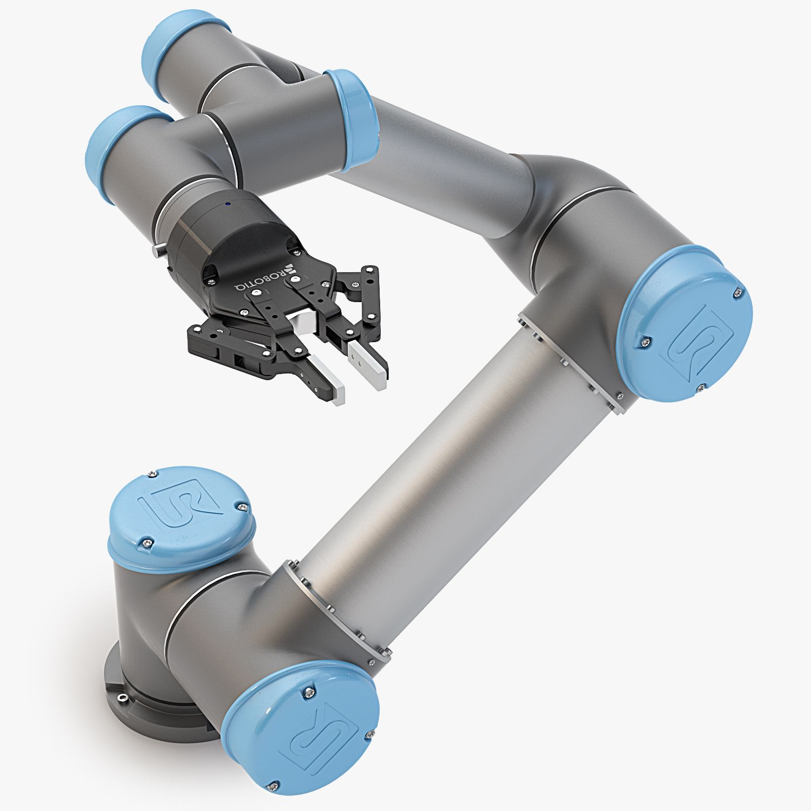
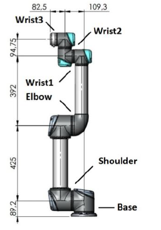
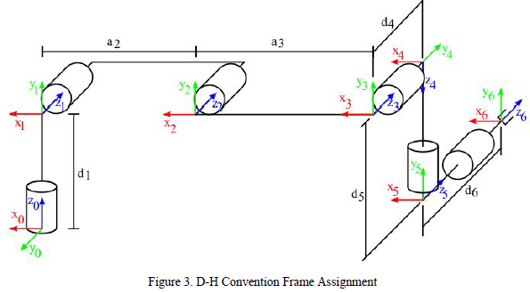
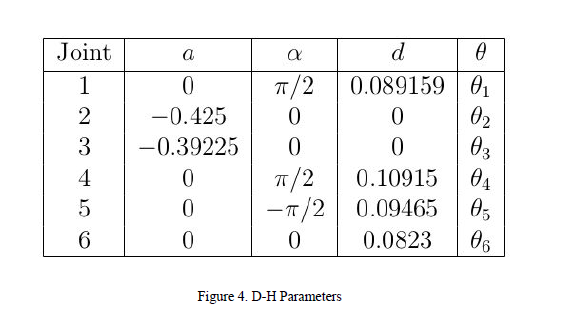
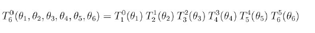
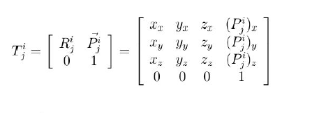

The aim of my "UR5 Pick and Place" project is to develop a system that enables a UR5 robotic arm to autonomously perform pick and place operations with high precision. This involves several key objectives:
The overall goal is to build a reliable and efficient robotic system that can automate repetitive tasks, enhance productivity, and ensure high precision in operations involving the UR5 robotic arm. This project leverages MATLAB for its development, taking advantage of its capabilities in robotics simulation, control, and inverse kinematics calculations.
The project involves the implementation and simulation of a pick-and-place operation using the UR5, a 6-DOF robotic arm, within a simulated industrial environment. Beginning with a comprehensive exploration of Forward Kinematics (FK) and delving into the intricacies of Inverse Kinematics (IK), particularly emphasizing the Jacobian method, I laid the theoretical groundwork. Translating these theories into practical implementations, I employed MATLAB for control and V-REP (CoppeliaSim) for simulation, ensuring seamless communication between the two platforms. The crux of the project lies in the utilization of Jacobian-based IK, enabling the computation of joint velocities necessary to achieve desired end-effector velocities, ensuring precision and efficiency in pick-and-place tasks. Culminating in a captivating demonstration, the UR5 adeptly executed pick-and-place maneuvers, showcasing the real-world applicability of the developed algorithms within a simulated industrial setting.
The UR5 robotic arm, developed by Universal Robots, is a sophisticated piece of industrial automation equipment designed for versatility and ease of use in a variety of applications. This detailed theory covers the UR5's mechanical design, kinematics, dynamics, control systems, and potential applications.
The UR5 robotic arm consists of six rotational joints, offering six degrees of freedom (DOF). This configuration allows for extensive flexibility and precision in positioning the end effector (the tool or gripper at the end of the arm). The main components are:
The UR5 is built with lightweight, durable materials, typically including aluminum and steel, which provide a balance of strength and mobility. The arm is designed to be compact, with a total weight of around 20 kg, making it easy to integrate into various work environments.
Forward Kinematics
The Denavit–Hartenberg parameters (also called DH parameters) are the four parameters associated with a particular convention for attaching reference frames to the links of a spatial kinematic chain, or robot manipulator. They are used in order to standardize the coordinate frames for spatial linkages. In this convention, coordinate frames are attached to the joints between two links such that one transformation is associated with the joint, [Z], and the second is associated with the link [X]. The coordinate transformations along a serial robot consisting of n links form the kinematics equations of the robot,
[T] is the transformation locating the end-link.
Reference frames below illustrate a common assignment of Denavit-Hartenberg convention to the UR5 robot (shown with all joint angles at 0).
 As with any 6-DOF robot, the homogeneous transformation from the base frame to the gripper can be defined as follows:
Also remember that a homogeneous transformation Tj i has the following form:
where is the translation from frame i to frame j and each column of [T] is the projection of one of the axes of frame j onto the axes of frame i. The equations below form the transformation matrix for the Forward Kinematics of the UR5. In these equations, I have used the following notations:
Jacobian Approach
The inverse Jacobian approach is a well-established method in robotics for solving the inverse kinematics problem, which involves determining the joint angles required to achieve a desired position and orientation of the robot's end-effector. This method leverages the Jacobian matrix, which describes the relationship between joint velocities and end-effector velocities.
Jacobian Matrix
The Jacobian matrix J is a key concept in robot kinematics. It is a matrix of partial derivatives that relates the rates of change of the robot's joint parameters to the rates of change of the end-effector's position and orientation. Mathematically, for a robotic manipulator with n joints, the Jacobian J is defined such that:
𝕫x = J 𝕫𝛼
where 𝕫x is the vector of end-effector velocities and 𝕫𝛼 is the vector of joint velocities.
Inverse Kinematics Problem
The inverse kinematics problem involves finding the joint angles 𝛼 that produce a desired end-effector position and orientation. Using the Jacobian matrix, we can express this problem in differential form. Given a small desired change in end-effector position Δx, the corresponding change in joint angles Δ𝛼 can be approximated by:
Δx ≈ J Δ𝛼
To find Δ𝛼, we need to invert the Jacobian matrix:
Δ𝛼 = J-1 Δx
However, the Jacobian matrix is not always square and may not be directly invertible. In such cases, the Moore-Penrose pseudoinverse of the Jacobian, J+, is used:
Δ𝛼 = J+ Δx
Numerical Stability and Singularity Issues
The inverse Jacobian approach is powerful but comes with challenges. One major issue is the singularity problem, where the Jacobian matrix loses rank and becomes non-invertible. Near singularities, the pseudoinverse can lead to very large joint velocities, causing instability and unrealistic joint configurations. To address this, methods like damped least squares (Levenberg-Marquardt algorithm) are employed. These methods modify the pseudoinverse calculation to add a damping factor, which helps in stabilizing the solution near singularities by ensuring that the joint velocities remain within reasonable limits.
Damped Least Squares
The damped least squares method avoids many of the pseudoinverse method’s problems with singularities and can give a numerically stable method of selecting ∆θ. It is also called the Levenberg-Marquardt method and was first used for inverse kinematics by Wampler [41] and Nakamura and Hanafusa [34].
The damped least squares method can be theoretically justified as follows (see [42]). Rather than just finding the minimum vector ∆θ that gives a best solution to equation (5), we find the value of ∆θ that minimizes the quantity
||J∆θ − ~e||2 + λ2||∆θ||2,
where λ ∈ R is a non-zero damping constant. This is equivalent to minimizing the quantity
||
J λI ∆θ −
~e 0 ||
The corresponding normal equation is
J λI T
J λI ∆θ =
J
λI
T
~e
0
This can be equivalently rewritten as
(JT J + λ2I)∆θ = JT~e.
It can be shown (by the methods of section 6 below) that JT J + λ2I is non-singular. Thus, the damped least squares solution is equal to
∆θ = (JT J + λ2I)−1JT~e.
Now JT J is an n × n matrix, where n is the number of degrees of freedom. It is easy to show that (JT J + λ2I)−1JT = JT (JJT + λ2I)−1. Thus,
∆θ = JT (JJT + λ2I)−1~e.
The advantage of equation (11) over (10) is that the matrix being inverted is only m × m where m = 3k is the dimension of the space of target positions, and m is often much less than n.
Additionally, (11) can be computed without needing to carry out the matrix inversion, instead row operations can find ~f such that (JJT + λ2I)~f = ~e and then JT~f is the solution.
The damping constant depends on the details of the multibody and the target positions and must be chosen carefully to make equation (11) numerically stable. The damping constant should be large enough so that the solutions for ∆θ are well-behaved near singularities, but if it is chosen too large, then the convergence rate is too slow.
In this phase, the environment is prepared by including necessary paths to the directories containing helper functions and V-REP API functions. The V-REP remote API is initialized and a connection is established. If the connection attempt fails, the program exits.
This phase involves obtaining unique identifiers (handles) for various objects in the V-REP environment. These objects include the UR5 robot joints, cuboids, tables, and reference frames. Handles are essential for interacting with and controlling these objects within the simulation.
Here, continuous streaming of data is set up for the positions and orientations of the cuboids and tables relative to the base frame. Additionally, the positions of the UR5 robot joints and the gripper joint are streamed. This continuous data flow is crucial for real-time monitoring and control of the robot and objects in the simulation.
The simulation is started in V-REP. The robot's joint positions are initialized to a starting configuration. This ensures that the robot begins the simulation in a known state, allowing for consistent and predictable behavior during the subsequent tasks.
Before performing any operations, the code calculates the Jacobian matrix for the current joint configuration of the robot. It then checks for singularities by evaluating the condition number of the Jacobian matrix. If the condition number exceeds a certain threshold, it indicates that the robot is near a singularity, which could lead to control issues. A warning is issued if a singularity is detected.
This phase involves defining and executing a series of pick-and-place tasks. The robot is instructed to pick up cuboids from predefined locations and place them on designated tables. Specific positions and offsets are set for the cuboids and tables to guide the robot's movements. Functions are used to perform the actions of picking up and placing the cuboids, ensuring precise and controlled execution of the tasks.
After completing the pick-and-place tasks, the simulation is stopped. The connection to the V-REP remote API is terminated, and any resources allocated during the simulation are cleaned up. This ensures that the simulation ends gracefully and that the system is ready for the next run.
Throughout the process, utility functions are used to perform specific tasks such as checking for singularities, moving the robot to pick up or place objects, and adjusting the positions of frames in the simulation. These functions encapsulate common operations, making the main code more modular and easier to manage.
In summary, the code systematically sets up and runs a simulation in V-REP, involving initialization, data streaming, performing pick-and-place tasks, and cleaning up resources. Each phase is designed to ensure that the robot operates smoothly and safely within the simulated environment.
https://mathweb.ucsd.edu/~sbuss/ResearchWeb/ikmethods/iksurvey.pdf
https://www.wiredworkers.io/cobot/brands/universal-robots/ur5/
| S.No | Name | Roll No |
|---|---|---|
| 1 | K.Vamshidharreddy | CB.EN.U4AIE22028 |
| 2 | Surya teja | CB.EN.U4AIE22069 |
| 3 | Tarun kumar | CB.EN.U4AIE22068 |
| 4 | Krishna Prasad | CB.EN.U4AIE22070 |